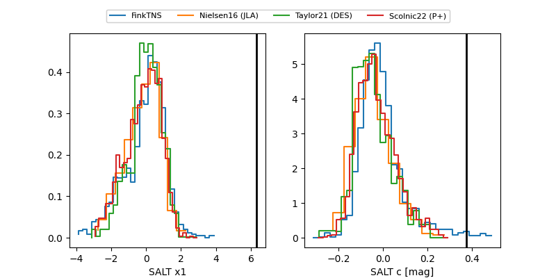

ZTF25acgyhhn
Target ZTF25acgyhhn at 2026-01-09 05:45
Aliases and brokers:
FINK:
Lasair:
ALeRCE:
alt names
ZTF25acgyhhn (ztf,fink_ztf)
Coordinates:
equatorial (ra, dec) = 47.4062,-8.45640
equatorial (HMS+DMS) = 03:09:37.50,-08:27:23.03
galactic (l, b) = (189.7140,-52.38562)
Flags:
Photometry:
last ztfg=19.84, ztfr=19.29
5 ztfg, 6 ztfr detections
Lightcurve

Visibility


Additional plots
